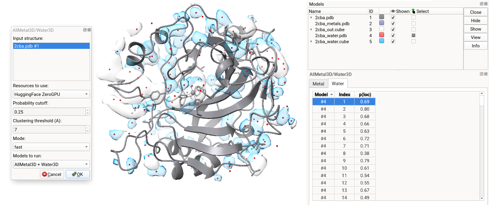

ChimeraX Plugin
We offer a ChimeraX plugin that you can use in ChimeraX on Mac, Windows and Linux.
It is possible to use it either with our provided inference server using HuggingFace Zero GPU or using a local GPU server of your choice. The prediction endpoint will not need to be located on the same device that you run ChimeraX.

Install
The tool is available via the ChimeraX toolshed.
To install go too Tools → More Tools and search for AllMetal3D/Water3D. If you do not install allmetal3d using pip (see below) you can only run using the HuggingFace ZeroGPU server with a limit of 5 min of prediction time per day.
Run the tool
The application will be available under Tools → Structure prediction or Tools → Binding Analysis.
Local server only
Follow the instructions to here allmetal3d using pip.
Once installed run
allmetal3d_server
If you run the server on the same machine as the chimerax instance you can use the localhost:7860 url. Otherwise, use the the xxx.gradio.live url. Select local GPU in the dropdown